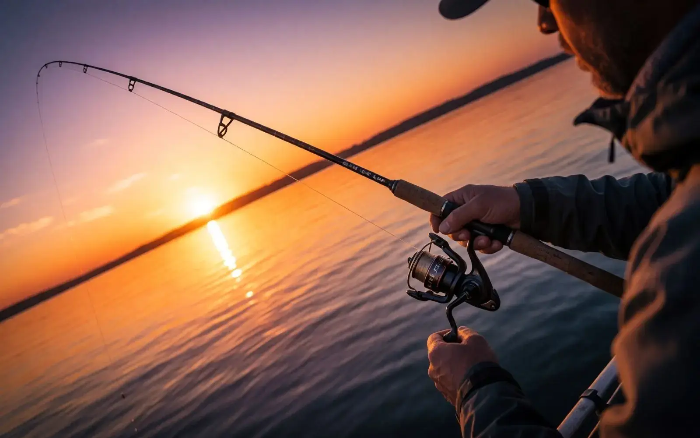
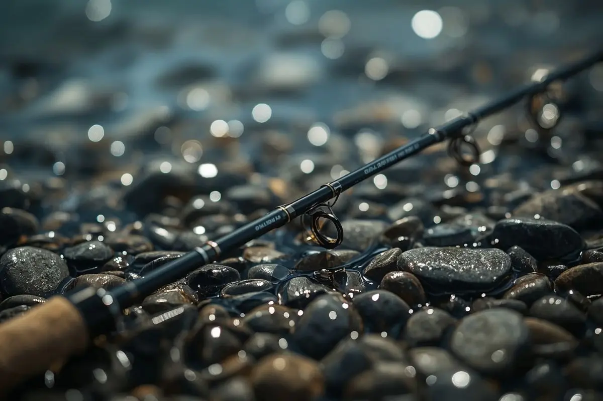
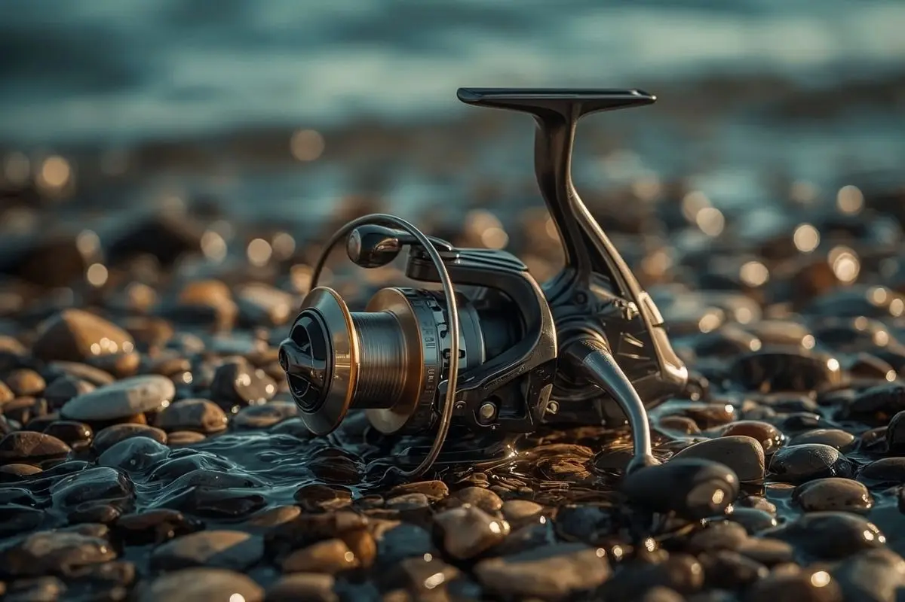
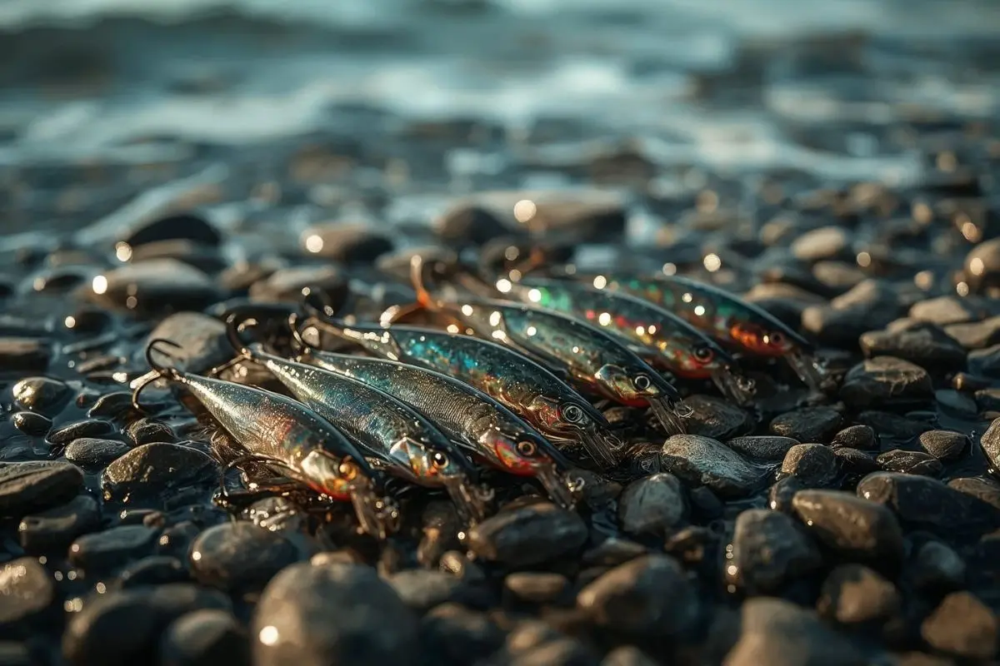
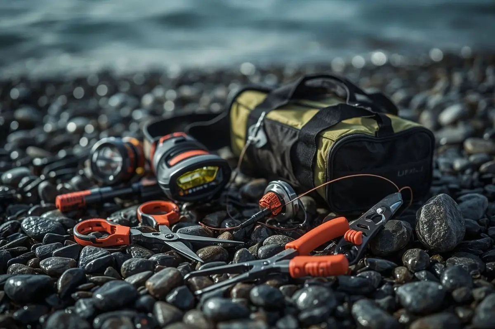

LRF Olta Balıkçılığına Hoş Geldiniz
Türkiye'nin en kapsamlı LRF Rehberi. Malzemeleri tanı, teknikleri öğren ve denize çık.
LRF Nedir?

Light Rock Fishing
LRF, İngilizce Light Rock Fishing kelimelerinin baş harflerinden oluşan, Türkçeye "Hafif Kaya Balıkçılığı" olarak çevrilebilen, Japonya kökenli, ultra hafif (0.5-10 gr atış ağırlığı aralığındaki) narin kamışlar, ince ipler ve mikro yemlerle kıyıdan yapılan bir at-çek avcılık disiplinidir. Yüksek hassasiyet ve aksiyon üzerine kuruludur.
LRF Ekipman ve Temel Bileşen Detayları

LRF Kamışı
Genellikle 1.80 ile 2.40 metre uzunluğunda, ultra hafif ve esnek gövdeli kamışlardır. İnce ipler ve mikro sahtelerle kusursuz uyum sağlayarak, su altındaki en ufak dokunuşları bile parmak uçlarınızda hissetmenizi sağlar.

LRF Makinesi
LRF makinesi, LRF'nin vazgeçilmez parçasıdır. 500-2500 numara arası makineler bu set için uygundur. Pürüzsüz bir kalama sistemi ve hafif yapı, uzun süreli balıkçılıkta yorgunluğu azaltır.

LRF Sahteleri
Esnek silikonlar, parlayan mikro jigler ve gramlık maket balıklardan oluşan LRF sahteleri, küçük deniz canlılarını taklit eder. Doğru renk ve boyut seçimi; hedef balığa, suyun berraklığına ve günün ışık saatine göre belirlenir.

LRF Ekipmanları
Kırmızı-beyaz LED'li kafa lambaları, ince uçlu balıkçı penseleri, katlanır kepçeler, balık maşaları ve mikro yem kutuları av esnasında hızınızı ve konforunuzu artırır. Doğru yardımcı ekipmanlar, iri balıkları kıyıya hasarsız almanızı sağlar.
3 Adımda LRF Balıkçılığı
-
Ekipmanı Tanı
Kamış, makine, misina ve sahte seçimini öğren. Doğru ekipman, başarılı bir balıkçılığın temelidir.
-
Tekniği Öğren
Atış teknikleri, sahte kullanımı ve balık davranışlarını anla. Pratik yaparak gelişirsin.
-
Denize Çık
Doğru noktayı seç, sabırlı ol ve keyfini çıkar. Her atış yeni bir deneyimdir.
Hazır Hissediyorsun, Değil mi?
Başlangıç Rehberi ile temelleri kavra, ardından Malzeme Rehberimizle ekipmanını bilinçli seç.